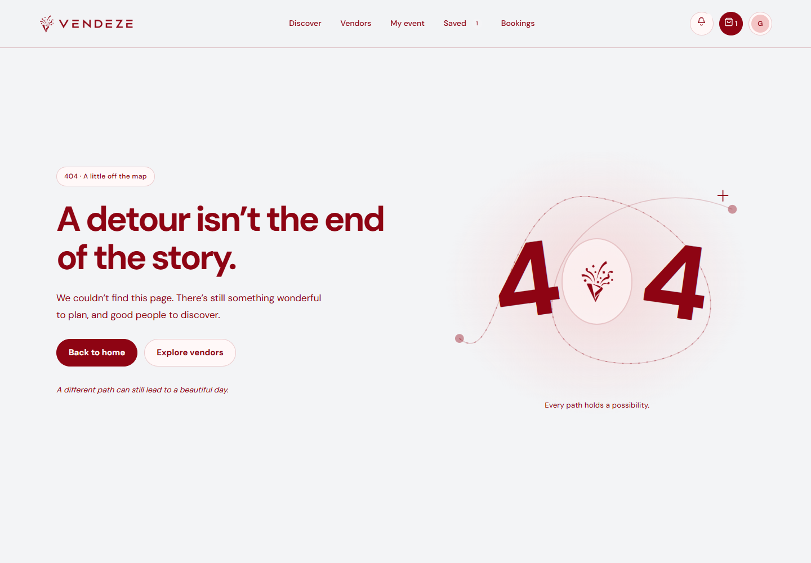

UI / UX handoff
Ready for a closer look.
The complete Vendeze frontend, with a thoughtful 404, a logo-first loading introduction, and refinements to navigation, accessibility, and phone interactions.
The approved burgundy, blush surfaces, soft homepage fade, and icon-only Ask AI treatment are preserved.
The preview uses isolated sample data. Keep ?preview=1 in the URL.
A useful wrong turn
“A detour isn’t the end of the story.”
A winding path, the Vendeze mark, and a quiet thought make the missing-page screen feel part of the brand. Clear actions lead back home or into vendor discovery.
Try the 404 and its recovery actions ↗
An introduction with character
The logo arrives. The name follows.
The mark appears first; the name then slides out from beside it. The introduction stays visible for about three seconds, including a pause on the complete name. Skip intro, reduced-motion support, and a loading-failure recovery keep the sequence usable.


These are still frames. Refresh the website preview to review the motion. In-app navigation stays immediate. Phone loading · Failure recovery


Small details, smoother journeys.
- Independent links and save controls on vendor cards.
- Keyboard navigation for sign-in tabs, event choices, packages, and payment options.
- Clear field errors associated with their inputs.
- Reliable notification state, dialog focus, and focus after navigation.
- Consistent headings, labelled regions, and larger phone save controls.
- Ask AI stays a sparkle beside Search, labelled on hover or keyboard focus. It has no popup or page.
Start with the full journey.
- Plan an event, then browse and search vendors.
- Save a vendor, inspect packages, and build a hold list.
- Try validation and complete the sample checkout.
- Review bookings, account details, and notifications.
- Use the sign-in demo picker to inspect staff workspaces.
- Check missing-page recovery and repeat on a phone.
Screen gallery
Open a capture for a closer look. Use the live preview to judge interactions.
| Screen | Desktop | Phone |
|---|---|---|
| Homepage | Desktop homepage | Phone homepage |
| Search | Desktop search | Phone search |
| Event form | Desktop event form | Phone event form |
| Services | Desktop services | Phone services |
| Category | Desktop category | Phone category |
| Vendor detail | Desktop vendor detail | Phone vendor detail |
| Saved vendors | Desktop saved vendors | Phone saved vendors |
| Hold list | Desktop hold list | Phone hold list |
| Checkout | Desktop checkout | Phone checkout |
| Confirmation | Desktop confirmation | Phone confirmation |
| Bookings | Desktop bookings | Phone bookings |
| Profile | Desktop profile | Phone profile |
| Sign in | Desktop sign in | Phone sign in |
| Vendor signup | Desktop vendor signup | Phone vendor signup |
| Vendor dashboard | Desktop vendor dashboard | Phone vendor dashboard |
| Admin | Desktop admin | Phone admin |
| Marketing | Desktop marketing | Phone marketing |
| Developer | Desktop developer | Phone developer |
| Missing page | Desktop missing page | Phone missing page |


Evidence and review boundary
The main responsive checks cover widths of 360, 390, 768, 1024, and 1440 pixels. Additional 320-pixel checks cover key small-screen forms and recovery. Chrome on Windows was used; Safari, Firefox, and physical devices still need release testing.
This is a frontend UI/UX candidate. Backend persistence, real availability, payments, authentication, and message delivery were not validated. Automated accessibility results supplement human review and do not constitute certification. Photos and listings are sample content.
Open verification reports
Record approval or required revisions in the tech lead review notes. See the implementation handoff for source details.